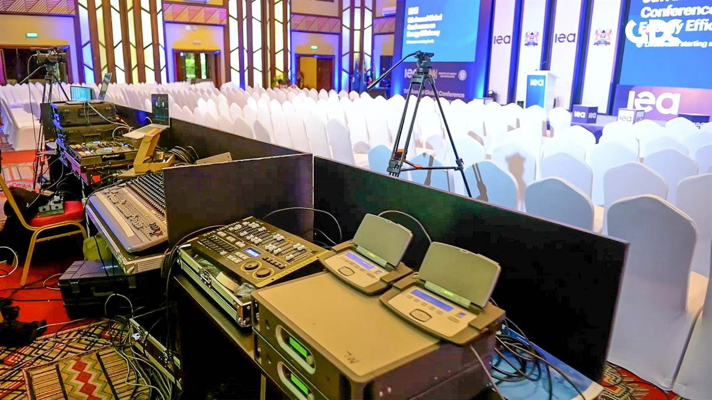

Events Production / GDC PROJECT
IEA Global Conference
The 9th Annual Conference on Energy Efficiency convened global policymakers, energy leaders, development partners, and private sector innovators to accelerate progress toward a more efficient, resilient, and sustainable energy future.
International Energy Agency (IEA) - 9th Annual Conference on Energy Efficiency
Where: Safari Park Hotel, Nairobi Kenya
When: May 21-22, 2024
Who: Global Delegates | Energy Leaders | Sustainability Focus
Powering Dialogue for a Sustainable Energy Future
The 9th Annual Conference on Energy Efficiency convened global policymakers, energy leaders, development partners, and private sector innovators to accelerate progress toward a more efficient, resilient, and sustainable energy future.
GDC was entrusted with delivering a seamless, high-level conference experience that reflected the global stature of the forum while enabling meaningful dialogue and stakeholder engagement.
The Challenge
Create a world-class conference environment capable of hosting high-level international dialogue while ensuring seamless delegate flow, technical precision, and a professional sustainability-focused setting.
Our Execution
Conference Experience Design: End-to-end planning and logistics coordination, delegate journey, and accreditation systems.
Environment & Branding: Conference branding and wayfinding systems, partner visibility, and exhibition environments.
Production & Technical Delivery: Stage and plenary setup, audiovisual systems and presentation management, lighting, and live feed integration.
On-Site Experience Management: Delegate reception and flow management, VIP protocol, and stakeholder coordination.
Impact & Outcomes
- Delivered a seamless global forum experience.
- Enabled high-level dialogue on energy efficiency and sustainability.
- Strengthened collaboration between governments, partners, and industry.
- Enhanced partner visibility and stakeholder engagement.
- Reinforced Nairobi's role as a regional hub for global sustainability dialogue.
PROJECT GALLERY
A closer look.


PROJECT FILM